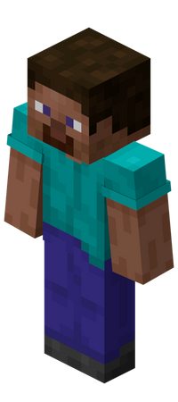
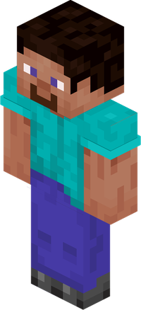

|
Стив |
Стив — один из девяти стандартных скинов, доступных игрокам в Minecraft , и перvвый, появившийся в игре. Этот персонаж появился в Zombie Town , невыпущенной игре, разработанной Нотчем в 2009 году до начала разработки Minecraft , и часто появлялся в последующих проектах Minecraft .
|  |
 |
| Стив java | Стив Bedrock |
| Пол | Мужской |
| Рост | 2 Блока |
| Сила | ∞ |
| Стивы взяты с маинкрафт вики | GromAlex_7, 2026 |